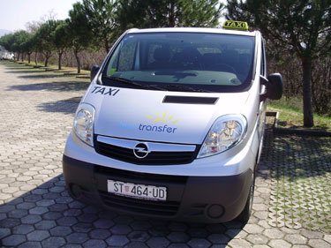

NEED A TAXI RIDE ON THE ISLAND OF HVAR?
- Hvar Taxi - Shuttle 8 + 1
- Taxi Hvar services 0 - 24h
- Tours around the island of Hvar
- Island wine tasting
- Visit to the island's rural households and taverns
- Private excursions: Dubrovnik, Međugorje...
If you arrive in the Island of Hvar by ferry and You need taxi transportation from the ferry port in Stari Grad, Jelsa or Hvar town to your accommodation or hotel, or You stay on the island Hvar and You want to go into the city, restaurant, disco, bar or any other place, feel free to call as - hvartransfer hvar taxi company.
We will be happy to pick you up, wait and return you to your accommodation or ferry.
